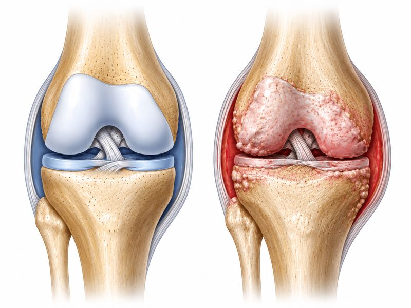
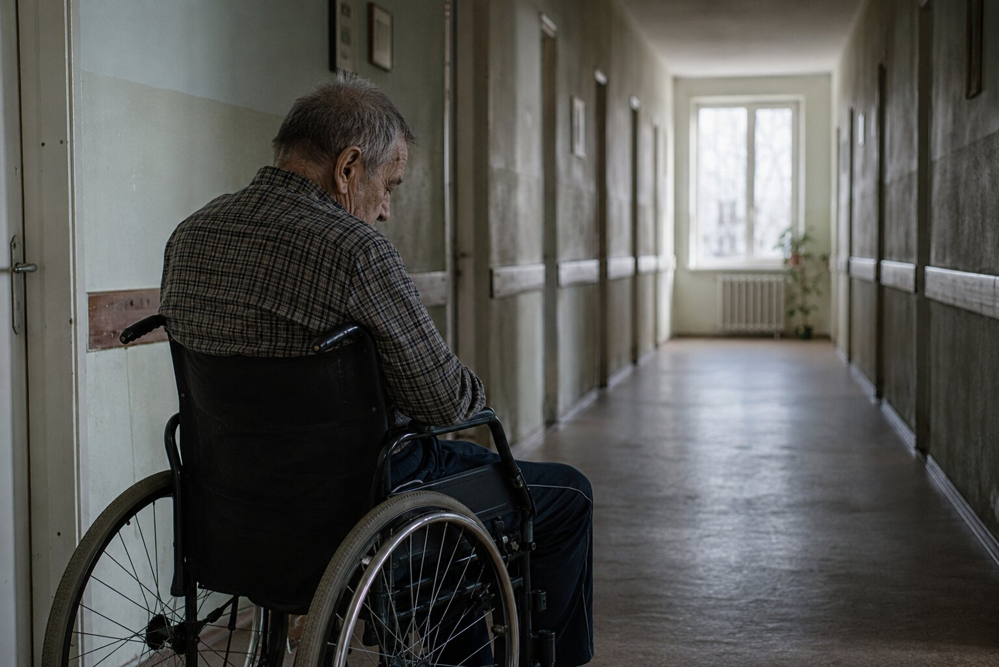
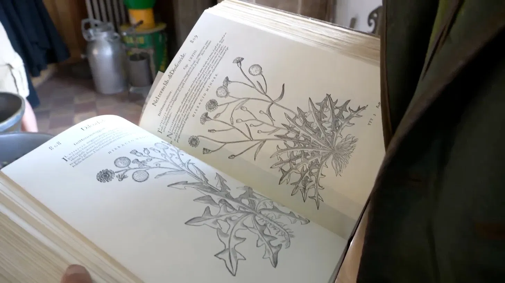
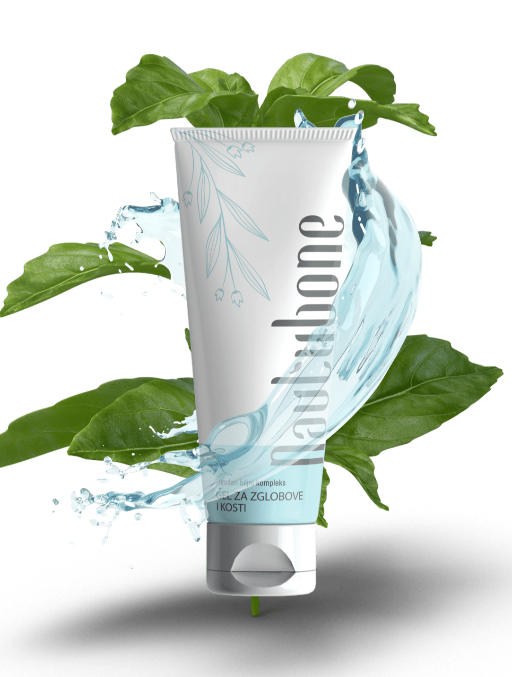
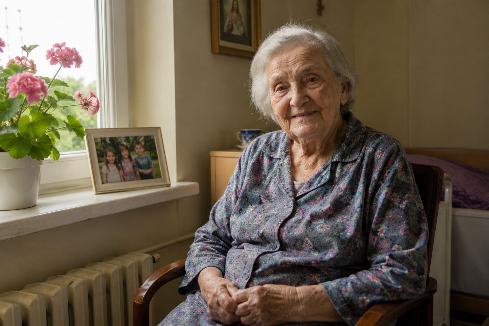
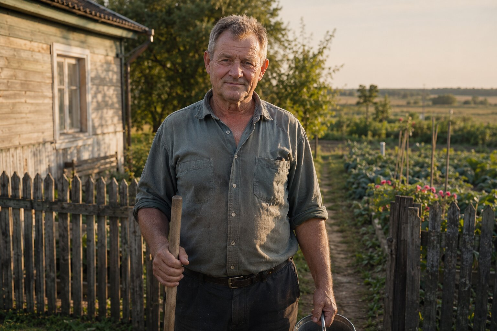

Am urcat într-o marți dimineața la Poienile Izei. Ceața stătea încă între dealuri. Ultimii kilometri i-am făcut pe jos, fiindcă mai departe nu e drum. „Îl căutați pe moș Anghel?" — ne-a întrebat o femeie la capătul satului, cu basma neagră pe cap. „Luați-o la stânga, pe lângă troiță. Casa lui e lângă izvor. Da' grăbiți-vă, că la prânz urcă la stână."
Așa l-am găsit pe Anghel Ursu — om de leacuri de 73 de ani care și-a trăit toată viața în Maramureș și care astăzi strică una dintre cele mai comode tăceri din țară: că paraziții sunt o poveste de demult, de pe vremea sărăciei. Nu sunt. Sunt în carnea nefăcută destul, în legumele nespălate din propria grădină, în apa de fântână, pe blana câinelui care doarme în casă. Iar când ajung înăuntru, nu strigă. Lucrează în tăcere, ani de zile.
Prin satele din jur — la Poienile Izei, la Botiza, la Ieud și mai departe — aproape fiecare familie a auzit de moș Anghel. Fetele își aduc mamele care „nu mai au vlagă". Femeile comandă pentru bărbații care slăbesc deși mănâncă. Bărbații vin după ani de tratat gastrită degeaba. Medicul de familie din comună recunoaște: „Nu pot să explic ce face omul ăsta. Dar oamenii mei chiar își revin."

„Trupul îți spune tot. Trebuie doar să faci liniște, ca să-l auzi." Discuție cu moș Anghel în casa lui de bârne, unde de pe grinzi atârnă mănunchiuri de pelin și de vetrice — buruienile cu care de-o viață curăță de paraziți animalele din bătătură
Moș Anghel Ursu: „Țin minte ziua aia ca și cum ar fi fost ieri. Era prin toamnă, tocmai coborâsem oile. Puneam buruienile la uscat sub șură — atunci le făceam numai ca să curăț animalele de paraziți. Și a venit o femeie de vreo șaizeci de ani, pe jos, de peste deal. Avea ochii ca apa stătută. S-a așezat pe laviță și mi-a zis:
„Bade Anghele, ajută-mă. Bărbatul meu se stinge. Slăbește de doi ani, se umflă după fiecare masă, noaptea scrâșnește din dinți de-l aud din tindă. Toate analizele bune. Doctorii zic că-s nervii. Iar el nu mai are putere nici să se ridice de pe scaun."
ATUNCI M-AM UITAT LA CÂINELE DE LÂNGĂ SOBĂ. ÎL CURĂȚAM DE PARAZIȚI DE DOUĂ ORI PE AN, CA PE TOATE ANIMALELE DIN BĂTĂTURĂ. ȘI M-AM ÎNTREBAT: DAR PE NOI CINE NE CURĂȚĂ?"

Moș Anghel vorbește rar, cu pauze lungi. Are mâini mari, noduroase, pătate de la rădăcini. În spatele lui, pe perete, atârnă mănunchiuri uscate de pelin și de vetrice — cele două buruieni pe care orice cioban din Maramureș le știe împotriva viermilor. Pe poliță — borcane, sticluțe întunecate și un caiet gros, în care bunica lui scria leacuri cu creion chimic.
„Oamenii cred că paraziții sunt o poveste de pe vremea bunicilor. E o minciună comodă. Uită-te la o oaie care are viermi: slăbește deși paște, i se urâțește lâna, nu mai are vlagă. Orice cioban știe ce are și o curăță. Dar când omul face exact același lucru — slăbește, se umflă, i se strică pielea — nimeni nu se uită acolo. La animal ne uităm. La noi — nu."
„Farmacia nu-ți spune adevărul — fiindcă, dacă ți l-ar spune, ar da faliment" Moș Anghel explică de ce o pastilă de deparazitare luată o dată nu curăță nimic — și de ce lovește ficatul
Moș Anghel Ursu:
— Hai să-ți spun ce văd lună de lună la cei care urcă la mine. Om de șaizeci de ani. A luat o dată o pastilă de deparazitare de la farmacie, s-a simțit mai bine două-trei săptămâni, pe urmă totul s-a întors. Și el zice: «păi nu-s paraziți, doar am luat medicament». Ba sunt. Fiindcă pastila aia a lovit un fel de vierme, poate două — iar celelalte au rămas și și-au văzut de treabă.
Ăsta e cercul: pastilă → câteva săptămâni mai bine → simptomele se întorc mai tare → altă pastilă → ficatul se încarcă → încă un medicament pentru ficat. Iar paraziții tot acolo sunt. Și tot așa, ani. Nimeni nu-ți spune partea cealaltă: că sunt zeci de feluri de paraziți și că stau în locuri diferite — în mațe, în ficat, în canalele fierii, în mușchi. Ca să cureți cu adevărat, trebuie să lovești pe mai multe deodată — și pe viermii mari, și pe ouă, și pe pui.

Oboseala, balonarea, pielea și „nervii" după 40 de ani nu sunt „normale pentru vârstă" — de multe ori sunt semnul că trupul poartă paraziți care îl storc din interior. Cine acoperă semnele astea cu pastile pentru stomac și creme pentru piele lasă viermii să lucreze mai departe, ani de zile.

Pastilele pentru „gastrită" și „alergie" doar acoperă simptomele, în timp ce paraziții se înmulțesc în liniște. Fără o curățare completă, trupul slăbește an după an, iar ei se întind spre ficat și spre canalele fierii.
Moș Anghel Ursu:
— Înțelegeți cât e de serios. Oamenii ăștia umblă ani de zile pe la doctori pentru „nervi", „alergie", „gastrită", „migrenă" — și ies de acolo cu un dosar de analize în care scrie „în limite normale". Nimeni nu le-a cerut un examen pentru paraziți. Nici unul. Hârtia tace, iar viermii lucrează. O PASTILĂ DE LA FARMACIE NU CURĂȚĂ TRUPUL DE PARAZIȚI — LOVEȘTE UN FEL ȘI LE LASĂ PE CELELALTE!
Și ce mă doare cel mai tare: oamenii ăștia n-au știut. S-au crezut sănătoși. Vinovați erau anii, munca, stresul. Iar în tot timpul ăsta purtau ceva viu în ei. Copiii le-au plecat în Italia, în Spania, în Anglia. Farmacia le trimite pastile o dată pe săptămână, doctorul îi vede o dată pe an. Iar ei se sting în tăcere.
Oameni pe care nu-i uit — și povești care schimbă felul în care vă priviți propria sănătate
Moș Anghel Ursu:
— Lăsați-mă să vă spun pe cine văd săptămână de săptămână. Nu cifre. Nu statistici. Oameni. Oameni cu nume, cu familie, cu povestea lor. Oameni care ani de zile au tratat gastrită și alergie, când de fapt aveau paraziți.


Iată semnele de paraziți pe care le văd cel mai des — și pe care oamenii le pun pe seama „anilor", a „stresului" sau a „mâncării proaste":
- Oboseală permanentă și lipsă de vlagă — dormiți 8 ore și vă treziți ca bătut;
- Balonare, gaze, greutate în stomac după masă — „parcă fierbe ceva în mațe";
- Constipație și diaree care se schimbă între ele fără motiv;
- Probleme de piele — erupții, mâncărimi, eczemă, „alergii" care vin și pleacă de nicăieri;
- Poftă de nestăpânit de dulce și de făinos — paraziții se hrănesc cu zahăr;
- Scrâșnit din dinți în somn, somn agitat, trezire pe la 3 dimineața;
- Anemie și lipsă de fier care nu se îndreaptă nici cu pastile — fierul e luat de paraziți;
- Cearcăne, piele palidă, păr și unghii fragile;
- Mâncărime în zona anală, mai ales noaptea — semnul cel mai limpede de viermi;
- Irascibilitate, „nervi", ceață în cap, concentrare slabă;
- Răceli și infecții dese — trupul își consumă puterile luptând cu paraziții;
Fiecare dintre semnele astea se pune ușor pe seama altui lucru. Tocmai de asta paraziții rămân nedescoperiți ani la rând. Iar dacă îi lăsați așa, duc într-un singur loc: INTOXICAȚIE CRONICĂ A ORGANISMULUI, IMUNITATE SLĂBITĂ, FICAT ȘI INTESTINE AFECTATE — ȘI UN TRUP CARE AN DUPĂ AN LUCREAZĂ TOT MAI GREU.
Fiecare zi cu paraziți în trup e încă o zi de intoxicație! Mii de oameni tratează ani la rând lucrul greșit — „gastrită", „alergie", „nervi" — în timp ce viermii îi storc nestingheriți din interior. Curățați-vă acum — pentru dumneavoastră sau pentru ai dumneavoastră — până nu e prea târziu!
„Bunica scria leacurile într-un caiet. Eu am adăugat ce am învățat curățând animalele." Cum a ajuns moș Anghel Ursu la amestecul de buruieni pe care îl folosesc astăzi peste 1.700 de oameni din satele Maramureșului
Moș Anghel Ursu:
— A doua zi m-am dus la bărbatul femeii aceleia. În casă era întuneric. Omul arăta ca o ciupercă uscată — slab, gălbejit. M-am așezat lângă el și l-am întrebat: „De câți ani te chinui așa?" A tăcut. I-a curs o lacrimă. „De doi ani. Și nimeni nu știe ce am." Atunci i-am pus întrebarea pe care i-o pun de-atunci fiecăruia: „Dar oile și câinele când i-ai curățat de paraziți ultima dată?" Mi-a zis: „Primăvara și toamna, ca tot omul." „Și pe tine?" N-a avut ce să-mi răspundă.
Ani de zile am făcut pentru animale un amestec de buruieni care le scoate viermii. Trebuia să fie din plante și blând, fiindcă laptele și carnea alea ajung pe masa oamenilor. Și am băgat de seamă un lucru: animalele curățate cu buruieni își reveneau altfel decât cele cu chimie tare — nu li se strica stomacul, nu slăbeau după tratament. Pe urmă am scos caietul bunicii. Ea știa toate buruienile astea împotriva viermilor, doar că le folosea una câte una. Scria: „pelinul alungă, vetricea usucă sămânța". Am pus la un loc ce știa ea cu ce învățasem eu de la animale — și am potrivit măsura până a ieșit un amestec care lovește paraziții în toate fazele. Nu e o descoperire. E o socoteală pe care nimeni n-a dus-o până la capăt.

Sigur, nu era o rețetă de laborator — era o socoteală de om de la țară, adunată din ce știa bunica și din ce vezi cu ochii tăi la animalele pline de viermi. Dar de acolo au început trei ani de potrivit măsura, până a ieșit un ceai care curăță complet.
Ce pune moș Anghel în ceaiul împotriva paraziților:
- Pelin (Artemisia absinthium) Buruiana pe care bunica o numea „amarul care alungă". Medicina populară din satele noastre o folosește de veacuri împotriva viermilor din mațe. Slăbește paraziții adulți și îi face să nu se mai poată ține de peretele intestinului
- Vetrice (Tanacetum vulgare) Acționează puternic împotriva paraziților intestinali și a ouălor lor
- Cuișoare (eugenol) Descompun ouăle și larvele paraziților — exact ce nu ating celelalte buruieni
- Nuc negru (Juglans nigra) Extract din coajă: curăță intestinele și ajută la eliminarea paraziților
- Semințe de dovleac (Cucurbita) Acționează blând asupra paraziților și calmează mucoasa intestinală
Buruienile astea se potrivesc greu în măsura corectă. Dacă amestecul nu e exact, ceaiul lovește un singur fel de parazit — exact ca pastila de farmacie — iar restul rămân. Toată treaba stă în faptul că acționează pe mai multe feluri deodată: și pe viermii mari, și pe ouă, și pe pui.
Așa s-a născut Parazol — ceaiul de buruieni care curăță organismul de paraziți complet și blând, fără chimie tare
Moș Anghel Ursu:
— Nu se face în laborator. Se face în șura mea, aici, la poalele muntelui. Buruienile împotriva paraziților le culegem eu și ajutoarele mele, pe coastele de aici, fiecare la vremea ei. Pe urmă le uscăm sub șură și le amestecăm în măsura știută. Se prepară ca un ceai obișnuit: o linguriță opărită cu apă fierbinte, dimineața și seara. Cura ține de obicei 3-4 săptămâni.


La bază stă ce scria bunica lui în caiet, potrivit după ce a văzut el la animalele pline de viermi. Pe limbaj de azi: combinația de buruieni concentrate face ca substanțele să ajungă prin sânge acolo unde stau paraziții — în mațe, în ficat, în canalele fierii. Efectul e de câteva ori mai puternic decât al unei pastile luate o dată din farmacie, fiindcă lovește pe mai multe feluri deodată. Iar avantajul ceaiului față de o pastilă e că lucrează treptat și ajunge peste tot în același timp — nu trebuie să nimerești un singur vierme ca să ai noroc. Pentru un om în vârstă care trăiește singur asta înseamnă un lucru simplu: bei ceaiul dimineața și seara și atât.
Parazol nu se ia la întrecere cu nimeni. Nu vrea să se bată cu farmaciile. Vrea doar să ajute. Fiecare buruiană — în măsura ei — lovește paraziții în altă fază: adulți, ouă, larve. De asta curăță complet, nu pe jumătate. Și, cel mai important: lucrează blând, fără să atace ficatul și rinichii. Merge și la 70, și la 80, și la 85 de ani! Primii oameni cărora le-am dat ceaiul au fost chiar cei mai bătrâni — cei pe care îi trimisese toată lumea acasă cu „nu aveți nimic".
Moș Anghel Ursu:
— Prima căreia i-am dat ceaiul umbla de șase ani pe la doctori degeaba. A treia zi mi-a zis că stomacul îi e mai ușor decât de ani de zile. Nu credea că e de la buruieni. Peste trei săptămâni s-a întors și mi-a spus că i s-a liniștit pielea. Atunci am plâns amândoi.
În patru feluri vă ajută Parazol să scăpați de paraziți — la orice vârstă
Cele patru acțiuni principale ale ceaiului „Parazol":
- Alungarea paraziților adulți Încă din primele zile de cură, pelinul și vetricea acționează asupra paraziților adulți din intestine — îi slăbesc și ajută trupul să-i scoată pe cale naturală. Nu un singur fel, ca pastila de farmacie, ci mai multe deodată.
- Distrugerea ouălor și a larvelor Cuișoarele — eugenolul — descompun ouăle și larvele paraziților, adică exact ce nu ating celelalte buruieni. Pasul ăsta e cheia: fără el, viermii se întorc din ouăle rămase. De asta ceaiul curăță complet, nu pe jumătate.
- Curățarea de deșeurile lăsate de paraziți În timp ce paraziții pleacă, trupul se curăță de deșeurile pe care aceștia le-au lăsat ani de zile în sânge. Nucul negru și semințele de dovleac ajută ficatul și intestinele să scoată afară ce s-a adunat — se duce oboseala și ceața din cap.
- Refacerea intestinelor și a imunității După ce paraziții au ieșit, amestecul calmează mucoasa intestinală și ajută trupul să-și adune puterile. Energia se întoarce, pielea se liniștește, digestia se așază, iar imunitatea — care ani de zile s-a consumat luptând cu viermii — începe iar să lucreze pentru dumneavoastră.
Oameni care au scăpat de paraziți — poveștile pe care moș Anghel le spune el însuși
Moș Anghel Ursu:
— Vă spun despre câțiva dintre cei pe care îi văd. Oameni cărora nu le mai dădea nimeni nicio explicație — nici doctorii, nici familia. Oameni la care nimeni nu s-a gândit să caute paraziți.

Aurica, 63 de ani, Poienile Izei. Șase ani tratată de „gastrită", „alergie" și „oboseală cronică", cu analize bune de fiecare dată — fiindcă analizele obișnuite nu arată paraziți. După o cură cu ceai — pentru prima dată în ani de zile s-a trezit odihnită, iar pielea i s-a liniștit. „Am plâns. Nu fiindcă îmi era mai bine. Ci fiindcă am înțeles câți ani am pierdut tratând altceva."
Rezultat după 3 săptămâni: a dispărut balonarea, s-a liniștit pielea, doarme toată noaptea.
Costel, 61 de ani, fost șofer de camion, Vișeu. Cinci ani tratat de gastrită care nu trecea cu nicio pastilă. Slăbea deși mânca normal — semnul clasic că ceva mănâncă în locul tău. „După vreo zece zile de ceai — prima dată în ani de zile am mâncat și pe urmă nu m-a durut și nu m-a umflat. Ce m-a enervat: cinci ani și o groază de bani pe un diagnostic greșit. Erau paraziți."
Rezultat după o lună: digestia s-a așezat, a pus greutatea înapoi, a revenit energia.De ce nu se găsește Parazol în farmacii? Și cum se poate lua?
Moș Anghel Ursu:
Sincer, se face greu și încet. Buruienile împotriva paraziților trebuie culese fiecare la vremea ei și potrivite în măsura exactă — pelin, vetrice, cuișoare, nuc negru, semințe de dovleac. Totul se face cu mâna, în cantități mici. Nu putem acoperi cererea unei rețele de farmacii.
O să mai treacă cel puțin 2-3 ani până când Parazol va ajunge în farmacii. Până atunci se dă doar prin internet, în cadrul unor programe de sprijin care se deschid de două ori pe an. Reducerea poate ajunge până la 50% — ceea ce contează enorm pentru pensionarii de la sate, care trăiesc cu o pensie de vreo 1.400 de lei pe lună.
Când s-a auzit că ceaiul chiar scoate paraziții — chiar și la oameni care se chinuiau de ani de zile — au venit comercianți și au vrut să-l vândă cu 590 de lei punga. Le-am zis: „Eu nu lucrez pentru bani. Bunica mi-a lăsat tot ce știa pe degeaba. N-o să jefuiesc pensionarii români." M-au refuzat. După câteva zile au început să urce la mine oameni de la control. Cereau hârtii. Voiau să mă amendeze. Dar n-am stat. Atunci a apărut în viața mea un tânăr de la oraș. Îi ajutasem mama cu ani în urmă — eu uitasem și de el, și de ea. S-a întors și mi-a zis: „Moșule, dumneata faci treaba asta aici, în munte, dar în țară sunt mii de oameni plini de paraziți care n-o să ajungă niciodată până la dumneata. Lasă-mă să ajut." El se ocupă ca amestecul făcut cu mâinile mele să fie pus în pungi curate, într-un atelier curat, ca un curier să-l ducă în toată țara și ca o mână de oameni să răspundă la telefon. Eu fac ceaiul mai departe aici, în ritmul meu. El are grijă doar să ajungă la cine are nevoie.
Vă rog: NU RATAȚI PROGRAMUL. Nu doar pentru dumneavoastră — ci și pentru părinți, pentru bunici, pentru cei apropiați care poate de ani de zile tratează gastrită și alergie, când de fapt au paraziți. Curățați-vă pe dumneavoastră — și gândiți-vă la cei pentru care nu are cine să se gândească.
Pentru comandă, folosiți formularul de mai jos.
Ultima ocazie de a lua Parazol anul acesta — pentru dumneavoastră sau pentru cineva drag

Moș Anghel Ursu:
— Am pus deoparte 20.000 de cutii numai pentru cititorii acestui portal. Orice cetățean român de peste 40 de ani poate primi o reducere de 50%, dar programul se încheie pe .
Nu așteptați până când oboseala, pielea și stomacul devin parte din fiecare zi. Până când dați bani pe diagnostice greșite. Amintiți-vă socoteala simplă: animalele le curățăm de paraziți de două ori pe an, iar pe noi — niciodată. O cură e de ajuns; nu e ceva ce se bea toată viața.
Scrieți-vă numele și numărul de telefon. Un consultant vă va suna, va alege programul potrivit și va trimite coletul în 2-3 zile prin curier, direct la adresa dumneavoastră, oriunde în România.
Cu drag — moș Anghel Ursu. Aveți grijă de ai voștri. Poate singurul lucru de care au nevoie e ca cineva să se uite, în sfârșit, unde trebuie.
Actualizare: : Având în vedere interesul foarte mare, stocurile se pot epuiza mai repede decât am estimat! Azi — — este ultima zi a programului sau până la epuizarea stocurilor.
Atenție! Nu închideți și nu reîncărcați pagina, altfel cutia de Parazol rezervată pentru dumneavoastră va fi dată altei persoane!
Profitați de ofertă — locul dumneavoastră este rezervat: Nº 19 974
direct la adresa indicată de dumneavoastră

COMENTARII
Rodica Munteanu
Acum 2 ore
Am plâns citind. Mama are 76 de ani și de ani de zile o tratează de „gastrită" și „alergie" — nimeni, dar absolut nimeni n-a pomenit de paraziți. Totul se potrivește. I-am comandat. Cum de nu m-am gândit mai devreme.
Elena Bărbulescu
Acum 5 ore
Beau ceaiul de 12 zile, dimineața și seara. Balonarea care mă chinuia de trei ani nu mai e. Azi mi-am încheiat o fustă care stătea în șifonier de anul trecut. Atât.
Ana Pintea
Acum 8 ore
Am 69 de ani. Șapte ani „alergie" — creme, pastile, doi dermatologi. Mă ardeau mâinile și mă scărpinam noaptea până la sânge. Trei săptămâni cu ceaiul și pielea s-a liniștit. Erau paraziți, iar eu am dat bani șapte ani pe creme.
Ionuț Sandu
Acum 12 ore
Sunt șofer, câte 10 ore la volan. Oboseală, ceață în cap și o poftă de dulce pe care n-o puteam stăpâni — acum am citit că paraziții se hrănesc cu zahăr și mi-a picat fisa. A patra săptămână: capul mi-e limpede.
Petre Dobre
Acum 14 ore
„Pe animale le curățăm de două ori pe an, iar pe noi niciodată." Am citit propoziția asta de trei ori. Am doi câini și oi, le fac deparazitare ca la carte. Pe mine — niciodată în viață. Am comandat pentru mine, pentru nevastă și pentru socru.
Mihaela Ardelean
Acum 16 ore
Mă gândesc să comand pentru tata. Are 78 de ani, de ani de zile se plânge de digestie și de oboseală, iar doctorii nu găsesc nimic. Credeți că la vârsta lui mai poate fi vorba de paraziți?
Georgeta Lupu
Acum 17 ore
Mihaela, mama mea are 82 de ani. Ani de anemie care nu se îndrepta cu niciun fel de fier — exact cum scrie aici, că fierul îl iau paraziții. O lună cu ceaiul și hemoleucograma s-a ridicat.
Constantin Vlad
Acum 15 ore
Mihaela, mama mea are 82 de ani! Slăbea, nu mai avea vlagă, se trezea noaptea. De două luni bea ceaiul — acum iese singură în curte. Nu exagerez. Și partea cea mai frumoasă: când am fost s-o văd, mă aștepta în picioare, la ușă. Am plâns amândouă. Comandă fără să stai pe gânduri, tatăl dumitale merită o șansă.
Nicoleta Șerban
Acum 20 de ore
Eu n-am nici câine, nici pisică, stau singură la bloc și mă întrebam dacă mă privește. Mă privea. Legume nespălate, atât a trebuit. O săptămână — și nu mă mai trezesc la trei noaptea. Nouă ani m-am trezit la trei.
Maria Ciobanu
Acum o zi
La 68 de ani credeam că e normal să fii mereu obosită. Primăvara asta am săpat toată grădina singură. Nora mea n-a crezut până n-a venit să vadă.
Petru Dumitrescu
Acum o zi
Am 82 de ani. Anul trecut abia mă mișcam — oboseală, digestie proastă, prindeam orice răceală. Am încercat fără speranță, sincer. Funcționează. Nu mai răcesc la fiecare curent.
Marius Toma
Acum o zi
Nevastă-mea se chinuie de ani de zile — piele, oboseală, „nervi". Îmi era teamă să nu fie ceva mai rău. A patra săptămână de ceai: ieri s-a dus singură la piață și s-a întors cu flori.
Daniela Neagu
Acum o zi
Citesc și mă gândesc la soacra mea, care a murit acum patru ani. Exact aceleași suferințe. Exact aceleași vorbe — „nervi", „anii". Nimeni n-a cerut vreodată un examen pentru paraziți. Am comandat pentru mama și pentru tata.
Florin Barbu
Acum 2 zile
Curierul l-a adus în două zile, am plătit la ușă. Pe cutie nu scrie nimic, am verificat — stau la bloc și vecinii văd tot. Încep mâine.
Adriana Ilie
Acum 2 zile
Am întrebat la două farmacii de ceva pentru paraziți — mi-au dat o pastilă și atât. Am întrebat de Parazol — nu îl au și nici nu îl comandă. Una dintre farmaciste m-a privit lung și mi-a zis: „așa ceva nu trece pe la noi". Cam ăsta e răspunsul.
Igor Lazăr
Acum 2 zile
Am căutat Parazol prin farmacii — nu îl are nimeni. Mi-au zis că trebuie comandat de pe pagina asta. Sper să mai fie stoc. Bunicului meu îi trebuie urgent — are 81 de ani, slăbește de un an și nimeni nu i-a căutat paraziți.